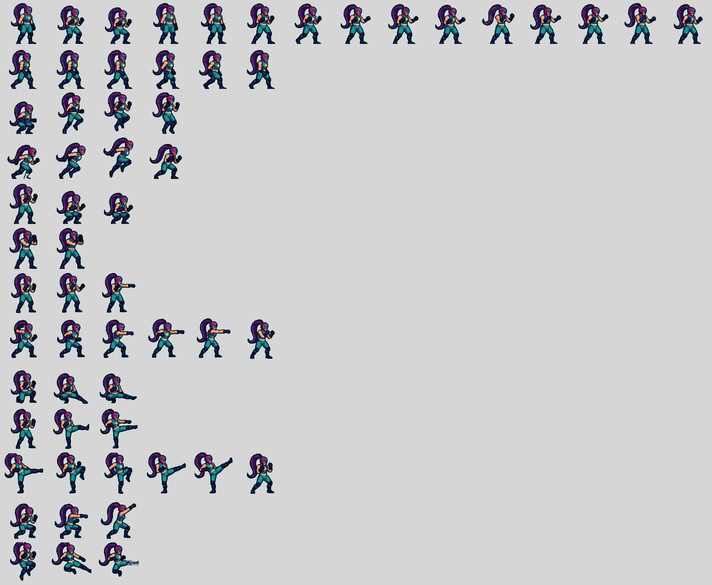
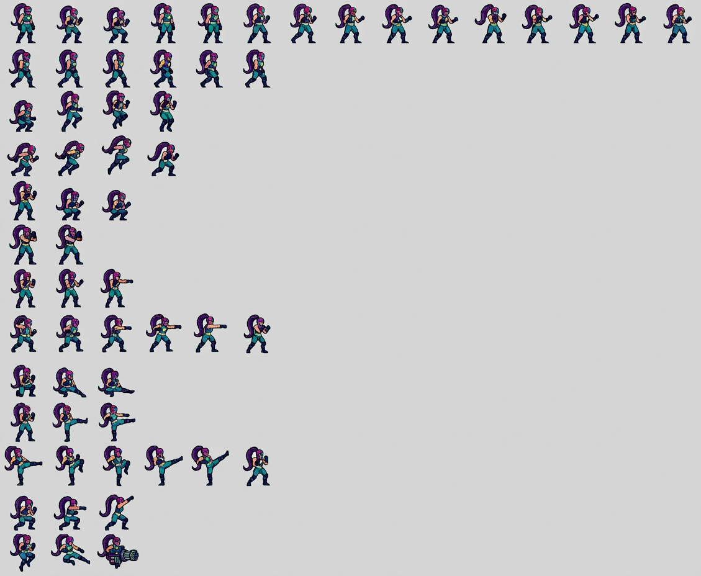
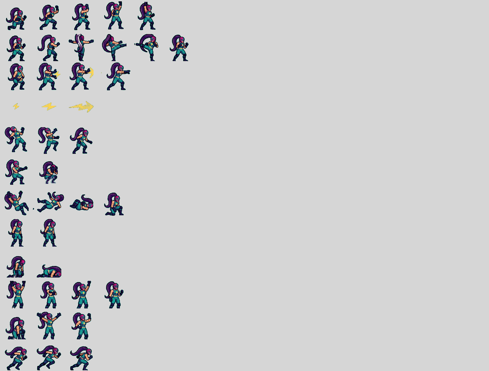
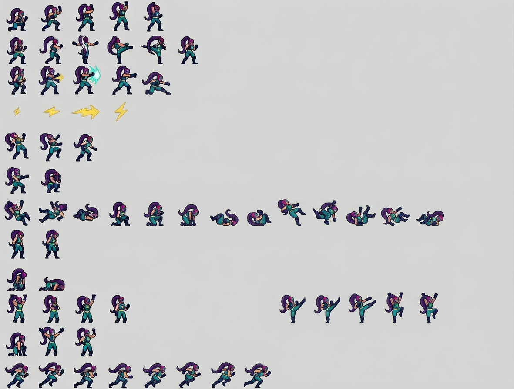
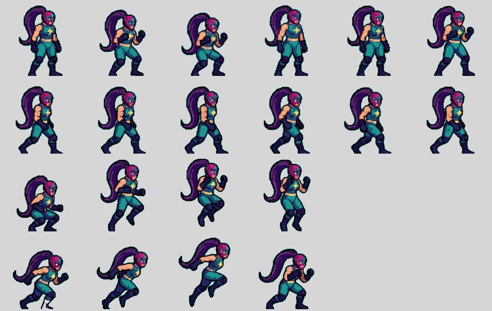
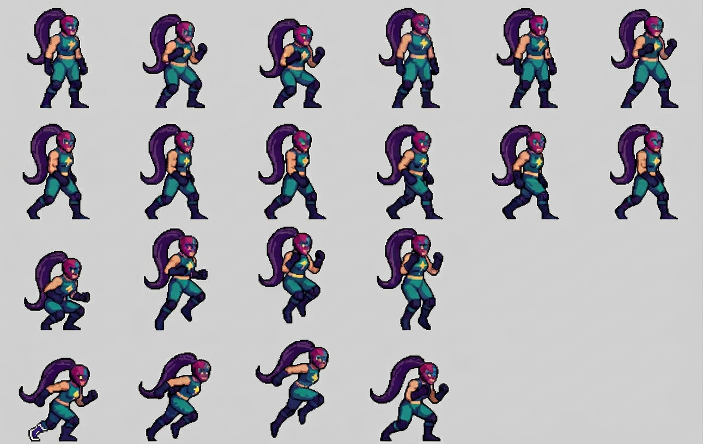

Mitad de arriba · filas 1-13
Parentesco de rejilla: 13 filas y 15 columnas, las mismas celdas vacías. Pero la IA devuelve 1 129 px de ancho donde le di 2 625: el sprite sale a la mitad.


Mitad de abajo · filas 14-25
Aquí se ve el lado malo: la fila de la patada rápida (los rayos amarillos) se queda sin personaje, y varias filas cambian el orden de las poses.


Prueba a 1:1 · 6 columnas × 4 filas
Recorte pensado para que la IA pudiera devolverlo a la misma escala. Le di 1 050 × 664 y devolvió 1 290 × 816: agrandó un 23 % aunque se le pidió lo contrario.


Visor de frames · las 25 animaciones recortadas de la hoja de la IA
Recortadas de las dos mitades por rejilla. Elige animación, cambia escala y fondo. Los frames son los que ha dibujado la IA, no los originales.
—
Medidas de lo que ha salido
| Métrica | Original | IA · mitad arriba | IA · mitad abajo | IA · prueba 1:1 |
|---|---|---|---|---|
| Resolución devuelta | 2 625 × 2 158 | 1 129 × 928 (43 %) | 1 181 × 896 (45 %) | 1 290 × 816 (123 %) |
| Tamaño del sprite | 94 × 151 px | ~51 × 64 px | ~51 × 64 px | agrandado |
| Colores distintos | 20 | 77 950 | 95 395 | 136 653 |
| Transiciones suaves | 6,1 % | 91,2 % | 91,5 % | suave |
| Contorno verde exterior | 5 557 px | 1 px (eliminado) | 0 px (eliminado) | eliminado |
| Rejilla (filas × columnas) | 25 × 15 | 13 × 15 | 12 × 15 | 4 × 6 |
| Frames útiles recortados | 102 | 123 (25 animaciones) | 24 | |
| Animaciones mantenidas | 25 | 25 sí, pero 4 cambian de contenido | parcial | |
| Píxeles planos | sí | no | no | no |
Lo que sí ha cumplido: mantiene la rejilla y el número de filas, respeta las celdas
vacías, y no añade contorno exterior (el borde verde desaparece por completo, como se
pidió). El diseño se reconoce.
Lo que no: no respeta el 1:1 — a media hoja baja a la mitad, y en la prueba de 6 × 4 agranda un 23 %. No entrega colores planos (77 000-136 000 colores, 91 % de bordes suaves). Y reinterpreta: la fila de los rayos se queda sin personaje y varias filas cambian poses.
Para tener 1:1 de verdad habría que darle unos 6 frames por pasada (~17 pasadas) y aun así decidiría las poses. Eso es rediseñar, no reconstruir.
Lo que no: no respeta el 1:1 — a media hoja baja a la mitad, y en la prueba de 6 × 4 agranda un 23 %. No entrega colores planos (77 000-136 000 colores, 91 % de bordes suaves). Y reinterpreta: la fila de los rayos se queda sin personaje y varias filas cambian poses.
Para tener 1:1 de verdad habría que darle unos 6 frames por pasada (~17 pasadas) y aun así decidiría las poses. Eso es rediseñar, no reconstruir.